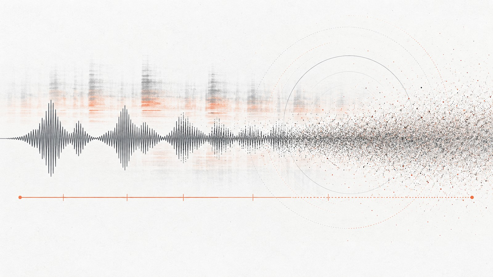

Speech Emotion Recognition That Survives the Real World
A model that scores well on a standard corpus is not, by that fact, a model that works on your recordings. Most published results come from a small number of acted, studio-recorded, English-language datasets. The moment the audio comes from a different microphone, a different room or a different language, the reported number stops being a prediction of anything.
Our work in this area is organised around that gap: measuring it, and releasing the benchmarks and datasets that let other people measure it too.
Evaluation before architecture
Before asking which model is better, it is worth asking what the number means. Our reality check on IEMOCAP examines how design and evaluation choices shape the performance a speech emotion recognition system reports — the kind of choice that is usually made once and never stated.
The same discipline applies to the models themselves. In our ICASSP 2026 work we put self-supervised speech backbones through degraded conditions rather than scoring them at a single operating point, because large-scale pretraining is widely assumed to carry robustness with it, and that assumption deserves to be checked rather than inherited.
Language is the shift nobody budgets for
English-trained models are routinely deployed on other languages. We built GreThE, a Greek speech emotion dataset drawn from theatrical performance — 500 samples, 46 minutes, 23 plays, 90 speakers, annotated for valence and arousal by four annotators — so that the cross-lingual question could be studied on real data rather than assumed away, and used it to examine how convolutional models transfer between languages.
Where the line comes from
The group has worked on emotion in speech since before the current generation of models. Two results from that period are still in use: a GAN-based augmentation scheme for the chronic data scarcity of the field, and unsupervised low-rank representations for settings with few labels. Our 2021 survey of multimodal emotion recognition remains the entry point most people use into this literature. More recently we have applied the same stack outside the lab, to predict the reception of public speech from how it is delivered.
Selected publications
- From Pretraining to Robustness: Benchmarking SSL Models for Noise-Robust Speech Emotion Recognition ICASSP 2026, IEEE, Barcelona, pp. 19497-19501 doi
- RobuSER: A robustness Benchmark for Speech Emotion Recognition 2024 12th International Conference on Affective Computing and Intelligent Interaction (ACII) (pp. 1-7). IEEE doi
- Designing and Evaluating Speech Emotion Recognition Systems: A reality check case study with IEMOCAP ICASSP 2023-2023 IEEE International Conference on Acoustics, Speech and Signal Processing (ICASSP) (pp. 1-5). IEEE doi
- A Dataset for Speech Emotion Recognition in Greek Theatrical Plays 13th Conference on Language Resources and Evaluation (LREC 2022), pages 1040–1046 doi
- Cross linguistic speech emotion recognition using CNNs: a use-case in Greek Theatrical Data Proceedings of the 15th International Conference on PErvasive Technologies Related to Assistive Environments (pp. 662-667) (2022) doi
- Deep multimodal emotion recognition on human speech: A review Applied Sciences, 11(17), 7962 (2021) doi
- Data Augmentation Using GANs for Speech Emotion Recognition Proc. Interspeech 2019, 171-175 doi
- Unsupervised Low-Rank Representations for Speech Emotion Recognition Proc. Interspeech 2019, 939-943 doi
- Emotion-aware speech popularity prediction: a use-case on TED talks 2024 12th International Conference on Affective Computing and Intelligent Interaction (ACII). IEEE doi
Open resources: GreThE, and the deepaudio-x / deepaudio-lab stack these experiments run on.